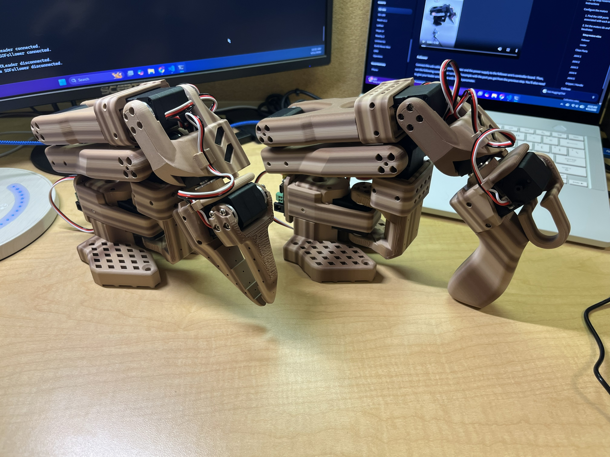
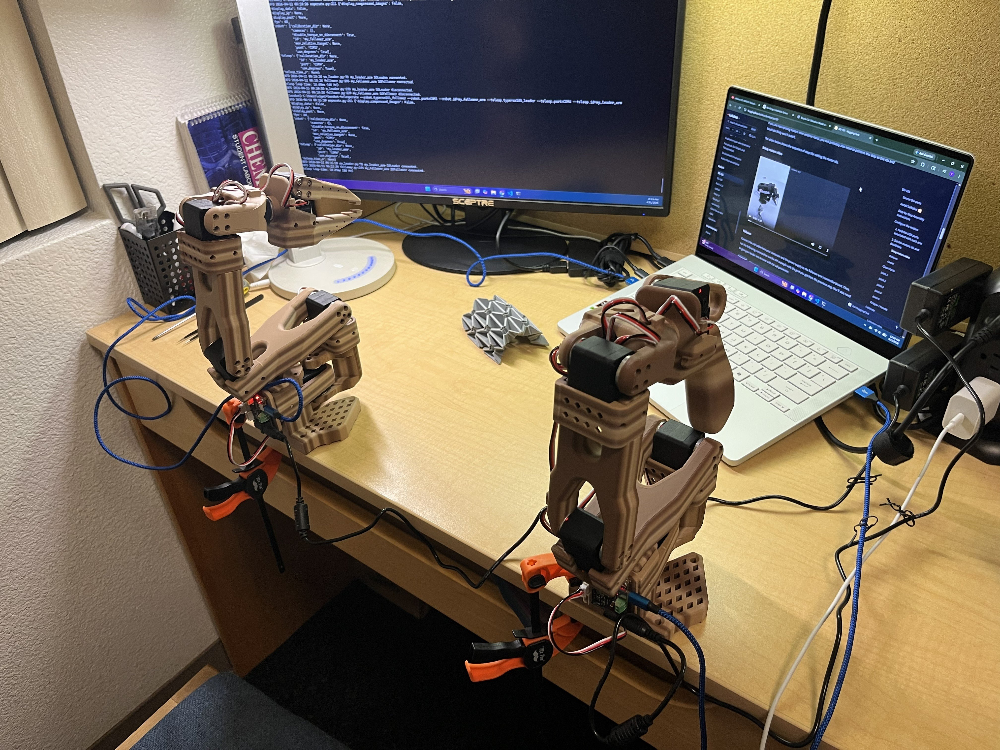
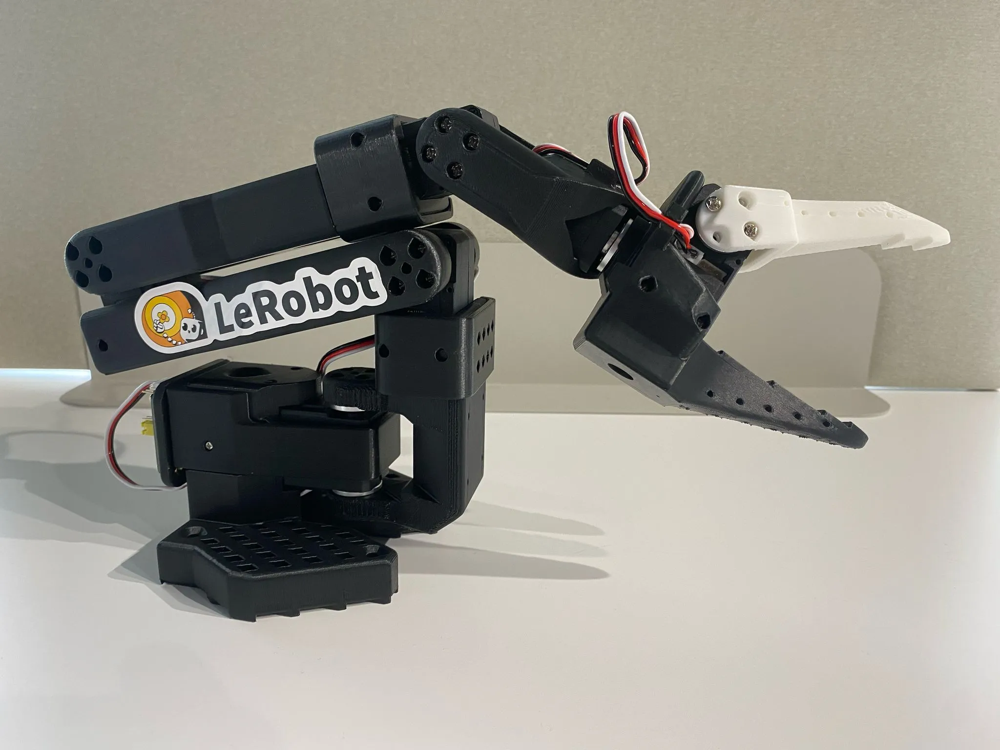
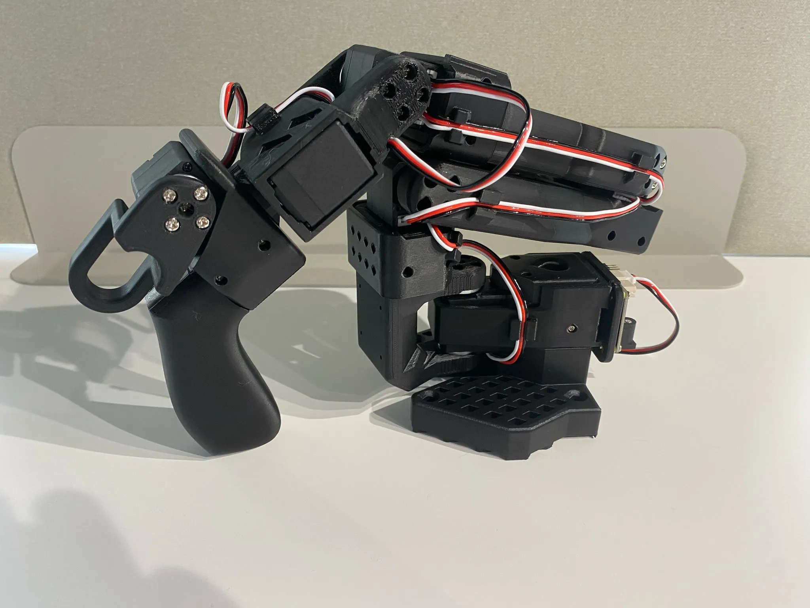

SO-ARM 101
March 2026 - Present
Building the SO-ARM 101 platform as a hands-on robotics project that connects arm assembly, motion testing, and learning-based control. Current work focuses on follower-arm integration, validating hardware motion, recording usable demonstrations, and preparing the software pipeline for imitation learning experiments.


